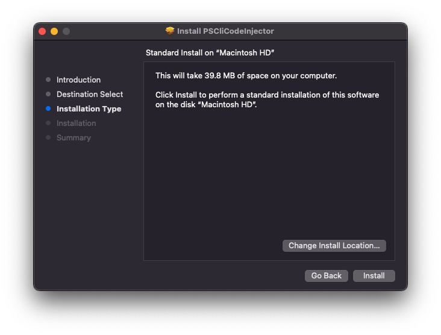

iOS Build Instructions - Bazel
The following instructions describe how to add Product Science instrumentation to a Bazel project's iOS application.
Example
Several of this document's steps include an "Example" section that describes how to apply the instructions to a demo Bazel application named SimpleApp. If you'd like to follow along, just clone our demoapps repository:
% cd ~
% git clone https://github.com/product-science/demoapps
Our examples will assume that you've cloned the repository to your home directory and kept the repository's default directory name (demoapps). If you decide to change either of these details, then modify the specified paths to fit your setup.
1. Copy productscience.yaml to your project's workspace directory
NOTE: If your build environment does not allow network access, then you will be provided with a 'productscience.zip' archive instead of a .yaml file. Copy the entire .zip archive to your workspace directory (do not unzip the archive).
Product Science will provide you with a productscience.yaml file that contains your credentials and configuration details.
Info
If you haven't received this file or need to request a new copy, please reach out to your designated integration support contact via established communication channel. If this contact is unavailable, send an email to support@productscience.ai for assistance.
Once you've received your productscience.yaml file, copy the file to your project's workspace directory (next to the WORKSPACE file).
Example
Assuming you've downloaded productscience.yaml to your ~/Downloads directory:
% cp ~/Downloads/productscience.yaml ~/demoapps/iOS/SimpleApp-Bazel
% ls -go ~/demoapps/iOS/SimpleApp-Bazel
...
-rw-r--r-- 1 819 May 11 2023 WORKSPACE
-rw-r--r-- 1 3619 May 12 2023 productscience.yaml
...
2. Install buildozer
buildozer is a build tool created and maintained by the Bazel team to rewrite BUILD files. PSCliCodeInjector uses this tool to configure your
project's BUILD files during injection.
Before running PSCliCodeInjector for the first time, you'll need to install buildozer on the host computer.
Instructions for installation can be found on the project's repository.
3. Install PSCliCodeInjector
NOTE: Offline builds are not hosted on our public repo. If your build environment does not allow network access, PS will work with your team to share offline-compatible builds via a private channel.
Download the latest installer package (named PSCliCodeInjector.pkg) from our public plugin repo.
Double-click the downloaded .pkg to start the installation process. By default, PSCliCodeInjector will be installed to /usr/local/bin.

4. Run PSCliCodeInjector
PSCliCodeInjector adds Product Science's instrumentation to your project's source code.
Before any changes are made to your project, PSCliCodeInjector will create a copy of your project's directory and save it to a backup location. PSCliCodeInjector will then add Product Science's instrumentation to your workspace directory's source code. The backup directory will contain the original, un-instrumented code.
Important
When you want to create an instrumented build, be sure to use the original project directory and not the backup directory.
Important
The code changes made by PSCliCodeInjector result in a large number of compile-time warnings, which can cause build failure if Bazel's max stdout/stderr log size is exceeded. To prevent this, include the following option in your bazel build command:
--experimental_ui_max_stdouterr_bytes=-1
Basic use
PSCliCodeInjector <root-directory> \
--console-build-command "<console-build-command>"
There are only two required parameters when running PSCliCodeInjector:
root-directory: This is the path to your project's workspace directory. There must be a BazelWORKSPACEfile at the top level of this directory.console-build-command: This is the build command that the tool will use to confirm that your project compiles successfully before and after injection. This command will be run from your project's workspace directory.
Example
Assuming that you've cloned the demoapps repository to ~/demoapps, the full path to your root-directory (aka your workspace directory) will be ~/demoapps/iOS/SimpleApp-Bazel.
Product Science does not currently support the iOS Simulator as a run destination, so the app will need to be built for device. To build for device, you'll first need to configure the app's code-siging settings. Perform the following steps:
- Copy a valid provisioning profile to
~/demoapps/iOS/SimpleApp-Bazel/ios-app/configuration/. Rename the provisioning profile toSimpleApp.mobileprovision. - Run the following command, replacing
<YOUR_BUNDLE_ID>with a bundle identifier that will work with your copied provisioning profile.
echo "BUNDLE_ID = \"<YOUR_BUNDLE_ID>\"" >> ~/demoapps/iOS/SimpleApp-Bazel/ios-app/configuration/codesign.bzl
Once that's done, the following will be your console-build-command:
bazel build //ios-app:SimpleApp --ios_multi_cpus=arm64
Given the information above, your full PSCliCodeInjector command will be:
% PSCliCodeInjector ~/demoapps/iOS/SimpleApp-Bazel \
--console-build-command="bazel build //ios-app:SimpleApp --ios_multi_cpus=arm64"
Run this command and wait for the tool to finish its work. When done, several of the files inside ~/demoapps/iOS/SimpleApp-Bazel will have uncommitted changes. You can see an overview of the changes using git:
% git -C ~/demoapps status
On branch main
Changes not staged for commit:
(use "git add <file>..." to update what will be committed)
(use "git restore <file>..." to discard changes in working directory)
modified: iOS/SimpleApp-Bazel/ios-app/BUILD
modified: iOS/SimpleApp-Bazel/ios-app/SimpleApp/AppDelegate.swift
modified: iOS/SimpleApp-Bazel/ios-app/SimpleApp/FirstViewController.swift
modified: iOS/SimpleApp-Bazel/ios-app/SimpleApp/SceneDelegate.swift
modified: iOS/SimpleApp-Bazel/ios-app/SimpleApp/SecondViewController.swift
Untracked files:
(use "git add <file>..." to include in what will be committed)
iOS/SimpleApp-Bazel-BACKUP/
iOS/SimpleApp-Bazel/PSKit/
iOS/SimpleApp-Bazel/productscience.yaml
no changes added to commit (use "git add" and/or "git commit -a")
Five existing files have been modified. There are also three untracked items - the productscience.yaml file that you added earlier, along with two new directories:
iOS/SimpleApp-Bazel-BACKUP/is a snapshot ofiOS/SimpleApp-Bazel/, created before any changes are made to the contents ofiOS/SimpleApp-Bazel/. By default, the backup directory is named<root-directory>-BACKUPand added as a sibling directory of the original. You can change this behavior using the--backup-diroption (see "Changing the backup directory" below).iOS/SimpleApp-Bazel/PSKit/is Product Science's framework package, responsible for tracing the app's code. An example of its use can be found iniOS/SimpleApp-Bazel/ios-app/BUILD, where it is added as a dependency of SimpleAppLib.
At this point, you should be able to install the app to your iOS device and record a trace.
To install the app:
The .ipa can be found at ~/demoapps/iOS/SimpleApp-Bazel/bazel-out/applebin_ios-ios_arm64-fastbuild-ST-9204ac8255b1/bin/ios-app/SimpleApp.ipa. If you have ios-deploy on your host computer, you can install this .ipa to your device from the command line:
% ios-deploy --bundle ~/demoapps/iOS/SimpleApp-Bazel/bazel-out/applebin_ios-ios_arm64-fastbuild-ST-9204ac8255b1/bin/ios-app/SimpleApp.ipa
If you'd prefer, you can also install the app from Xcode's "Devices and Simulators" window.
To record a trace:
Changing the backup directory
PSCliCodeInjector <root-directory> \
--console-build-command "<console-build-command>" \
--backup-dir <backup-directory>
A backup of your project's root directory will be created before injection is run. By default, this backup directory is created at <root-directory>-BACKUP.
You can override the location of the backup directory by including the --backup-dir option with a custom directory path.
Example
You're about to re-run injection on the SimpleApp-Bazel workspace, and PSCliCodeInjector doesn't currently support modifications to already-injected code. Before continuing, revert the changes from previous examples that you made to the SimpleApp-Bazel directory:
% git -C ~/demoapps/iOS/SimpleApp-Bazel/ add .
% git -C ~/demoapps/iOS/SimpleApp-Bazel/ reset --hard HEAD
You're also about to specify a custom backup directory so, to avoid confusion, delete the previously-created backup directory:
% rm -r ~/demoapps/iOS/SimpleApp-Bazel-BACKUP/
The local ~/demoapps working tree should now be clean. You can confirm by checking its git status:
% git -C ~/demoapps/iOS/SimpleApp-Bazel/ status
On branch main
nothing to commit, working tree clean
We've discarded the productscience.yaml file, so we'll need to re-copy it to the workspace directory:
% cp ~/Downloads/productscience.yaml ~/demoapps/iOS/SimpleApp-Bazel
% ls -go ~/demoapps/iOS/SimpleApp-Bazel
...
-rw-r--r-- 1 819 May 11 2023 WORKSPACE
-rw-r--r-- 1 3619 May 12 2023 productscience.yaml
...
Let's run PSCliCodeInjector on the SimpleApp-Bazel workspace again, but this time we'll save the backup directory to the /tmp directory. Let's also rename the backup directory to something a bit shorter (SimpleAppBackup). Your new backup-directory will be /tmp/SimpleAppBackup, and your new PSCliCodeInjector command will be:
% PSCliCodeInjector ~/demoapps/iOS/SimpleApp-Bazel \
--console-build-command "bazel build //ios-app:SimpleApp --ios_multi_cpus=arm64" \
--backup-dir /tmp/SimpleAppBackup
Run this command and wait for the tool to finish its work. When done, the changes should almost match those that you saw after finishing the previous examples. The only difference will be that ~/demoapps/iOS/SimpleApp-Bazel-BACKUP/ no longer shows up in that directory's git status. Instead, you can find the backup directory at /tmp/SimpleAppBackup:
% ls -go /tmp/SimpleAppBackup/
total 16
-rw-r--r-- 1 819 May 16 19:50 WORKSPACE
...
Changing the configuration archive path (offline-compatible builds only)
NOTE: This option is only relevant if your build environment does not allow network access. Standard builds will load this information automatically from our API.
PSCliCodeInjector <root-directory> \
--console-build-command "<console-build-command>" \
--local-config <config-archive>
By default, PSCliCodeInjector expects your configuration archive to be named 'productscience.zip', and to be placed in your project's root directory.
If you'd prefer to keep the archive somewhere else, you can tell PSCliCodeInjector where to look by passing the archive's full path (including name) to the --local-config option.
Other options
PSCliCodeInjector accepts several other options. Pass the --help flag to see the full list:
PSCliCodeInjector --help
5. Share build with Product Science
Please follow instructions at iOS Distribution Instructions to share your build with us.